Dream to Assist: Intent-Conditioned World Models for Shared Vehicle Control
1Toyota Research Institute, Cambridge, MA · 2Toyota Research Institute, Los Altos, CA · 3Massachusetts Institute of Technology
Contact: Jonathan DeCastro, jonathan.decastro@tri.global
Looking for the conference paper? Dreaming to Assist (CoRL 2024) has its own page. This page covers the extended version, which adds human-subjects studies and an on-vehicle deployment.
Abstract
Assistive agents in shared-control settings face a dual challenge: acting proactively to align with the human's intentions while remaining legible enough for the human to comprehend and fluently respond in real time. We present Dream2Assist, a model-based reinforcement learning framework for tightly-coupled shared decision making that addresses both sides of this challenge. Our approach extends a recurrent state-space world model with intent inference, enabling an assistive policy trained via fictitious co-play to anticipate and support discrete human objectives without overriding human agency.
Beyond the computational framework, we describe the full deployment pipeline needed to translate a world-model-based policy into a safe, human-centered system in a resource-efficient way. Crucially, we address the sim-to-real-human gap via policy down-selection and reward restructuring within an iterative human-machine interface design. We validate the framework through three human-subjects studies and a preliminary on-vehicle deployment spanning two qualitatively distinct domains: high-speed racing (N = 30) and urban driving with richer intent structure (N = 10). Our results demonstrate that intent conditioning yields measurable improvements in torque alignment and collision rate. We surface key design insights and practices for deploying learning-based assistive agents in safety-critical, real-time human-robot teaming.
The questions we set out to answer
- Can an assistant infer what the driver is trying to do, and help in a way that fits?Method
- How do you take a policy trained with simulated partners to real people?Deployment pipeline
- Does the assistant help real drivers at speed, and where does it struggle?Racing · Evals 1 and 2
- Does inferring intent, by itself, make the assistant a better teammate?Urban driving · Eval 3, double-blind A/B
- Does the policy carry over to a real vehicle without retraining?GRIP · on-vehicle deployment
Method
Can an assistant infer what the driver is trying to do, and help in a way that fits?
Dream2Assist gives an assistant a latent model of its human partner. The assistant reads the driver's behavior, infers a discrete objective such as pass versus stay behind, or left versus right around a hazard, and shapes its assistance to fit.
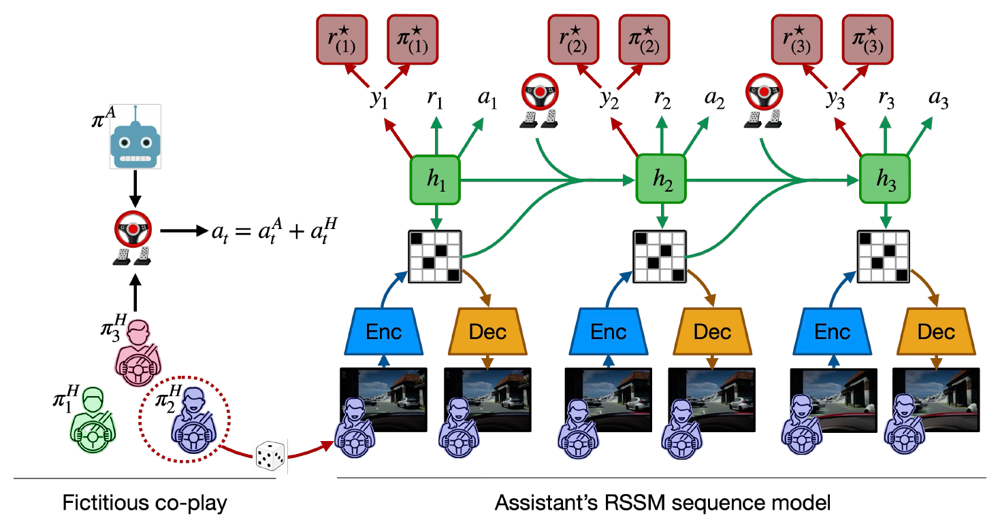
Three ingredients
- Intent-aware world model. A DreamerV3-style RSSM with an added intent predictor on the assistant's latent state. The inferred intent is re-estimated at every step from a window of latent states, so it can follow changes during an episode.
- Fictitious co-play. The assistant trains alongside a population of simulated drivers with different objectives and different skill levels, taken from checkpoints along their own training. The assistant learns to cope with imperfect partners, and learns to tell the intents apart.
- Value-aligned reward. The assistant is rewarded for the task, penalized for the size of its own intervention, and rewarded for acting like an expert that shares the inferred intent.
Here ŷA is the inferred intent, r̂* the reward an intent-aligned expert would receive, and a* the action that expert would take. All evaluations in the paper use the reward-only variant (αr = 1, αa = 0).
Defaults to light assistance, by construction
Assistance stays light in two situations. If the driver is already driving the way an intent-aligned expert would, there is little to correct, and the intervention penalty keeps the assistant's input small. If the system is uncertain which intent the driver holds, the intent-conditioned reward terms approximately cancel, leaving the task reward and the intervention penalty, so the assistant again intervenes less. In between, assistance ramps up as the driver's behavior departs from what the expert for the inferred intent would do, and ramps down as the system becomes more uncertain of the driver's intent. No special case is coded for any of this. It follows from the shape of the reward.
Safety layer
A control-barrier-function filter sits on top of the learned policy and activates only near a constraint boundary. In the human studies reported here it was applied to the trajectory visualization shown to the driver, not to the assistive torque, in order to isolate the effect of intent conditioning on the torque itself.
Deployment pipeline
How do you take a policy trained with simulated partners to real people?
A policy that works with simulated partners is not yet a system that works with people. The paper contributes a deployment pipeline that combines automated policy screening, counterfactual log replay, and human-in-the-loop vetting with an interface-design process that is resolved before policy quality is formally evaluated.
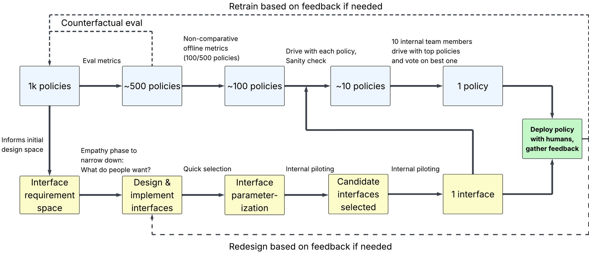
Studies
Where did we test it?
Two domains, three human-subjects studies, and one on-vehicle deployment.
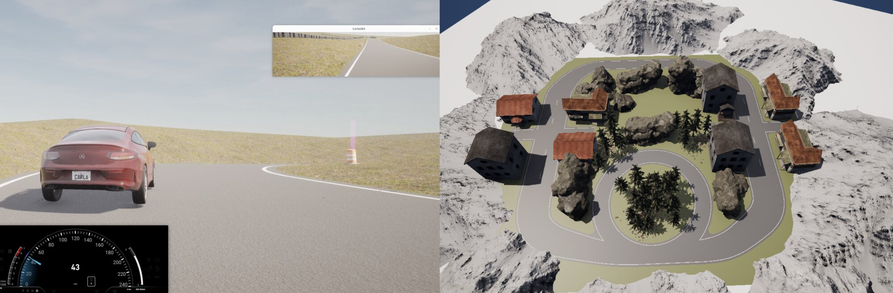
| Study | N | Comparison | Purpose |
|---|---|---|---|
| Eval 1 Racing characterization | 24 | Assisted vs unassisted | Characterize shared control across track geometries and identify where to refine |
| Eval 2 Racing refinement | 6 | Refined vs initial policy, within subjects | Check that targeted refinements improved the Eval 1 turn behavior |
| Eval 3 Urban validation | 10 | Intent vs no intent, double-blind A/B | Isolate the contribution of intent conditioning |
| GRIP Test vehicle (VR) | 3 | Intent vs no intent | Feasibility of transfer with no retraining |
Drivers see the assistant's planned path as a green dashed line ahead of the car and feel its steering input as torque on the wheel. Steering is coupled: the road wheels follow the steering wheel, and the assistant communicates by applying torque the driver can follow or override at any time. Throttle and brake are uncoupled, so the driver does not feel longitudinal assistance through the pedals.
Racing · Evals 1 and 2
Does the assistant help real drivers at speed, and where does it struggle?
It helps on straights. Turns exposed a gap between simulated and real partners, and targeted refinements moved the policy in the right direction.
Eval 1: characterization (N = 24)
Drivers attempted eight overtakes of increasing difficulty, each with and without assistance. On straights, assistance raised per-participant overtake success from 80% to 89% (p = .069, n = 23) and increased minimum clearance to the opponent (+0.47 m). Turns were harder: per-participant overtake success fell from 51% to 21% (p < .001), and minimum clearance fell from 1.99 m to 1.01 m. Inspecting the assistive inputs pointed to over-steering just before the turn, which gave us a specific target for refinement.
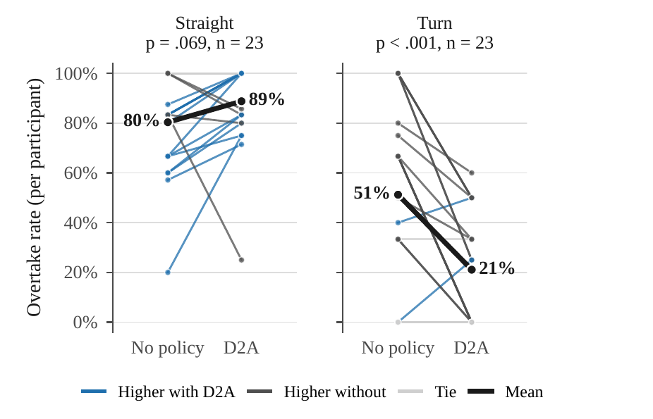
Participants rated the assistant as understanding their intent to pass well above neutral (about 5.3 on a 7-point scale, p < .001), and safety was rated above neutral overall and clearly so on straights. Helpfulness and safety ratings followed the same straight-versus-turn split as the objective results.
What the turn results taught us
The simulated partners steered more aggressively, and more repeatably, in turns than real people do. The world model learned overly aggressive turn dynamics from them, which produced steering over-compensation. That diagnosis directly shaped the refinements in Eval 2.
Eval 2: targeted refinement (N = 6)
The refinements were human-data augmentation, output smoothing, and reward restructuring that penalizes collapse to a single intent. The refinements moved the policy in the intended direction. The refined policy was preferred on 16 of 27 trials (59%), on both straights and turns, and likability rose (3.31 vs 2.95). The gap between intent-aligned and intent-opposing AI steering narrowed (from −10.1° to −5.6°, better for 3 of 5 participants), and on turns the initial policy applied roughly twice the steering of the refined one in the seconds before the overtake (about 50° vs 25°). The pilot is small and aimed at direction rather than significance, so none of these differences is statistically significant.
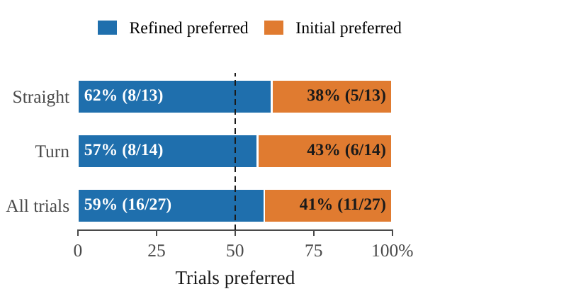
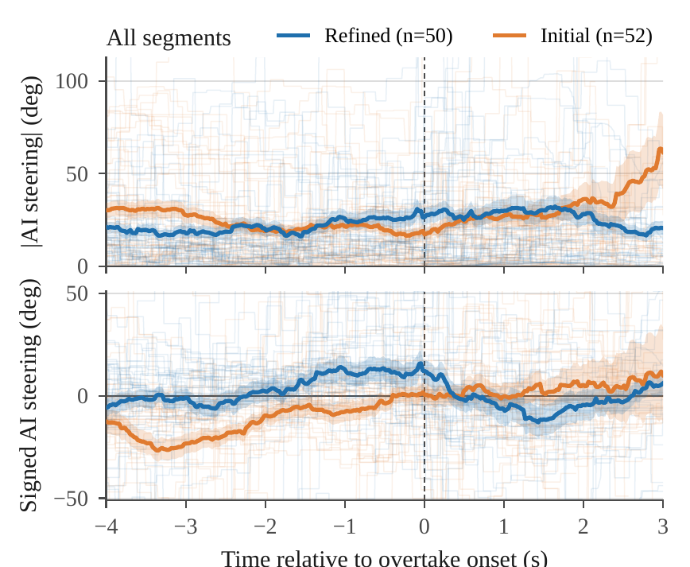
Urban driving · Eval 3
Does inferring intent, by itself, make the assistant a better teammate?
Eval 3 is the cleanest test. Same architecture, same rewards, same safety layer, and the intent predictor is the only difference. Participants did not know which assistant they were driving.
The hazards, driven without assistance
Two of the surprise events in the town scenario, shown with a person driving without the assistant. These are human-driven runs from our CompactSim setup.
Same scenario, two assistants
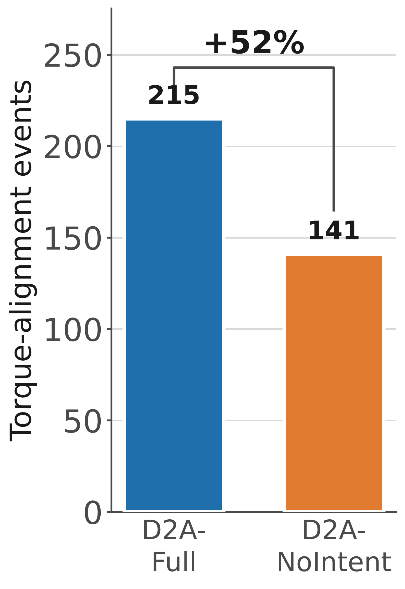
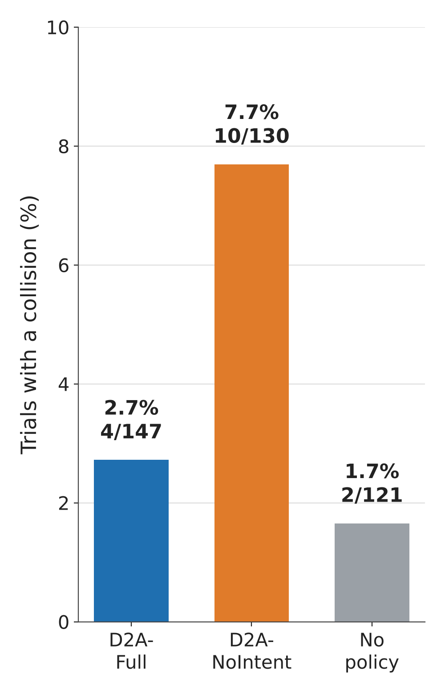
Steers with the driver, and collisions cut by about two-thirds
With intent, the assistant steers with the driver earlier on the approach. From about 3 to 1.5 s before the closest approach to the oncoming car, it was less misaligned with the driver than the no-intent assistant for all seven participants with usable traces. Without intent, it steers against the driver's chosen direction on average. In the final second the order flips for five of the seven, so the difference is concentrated in the approach (see participant 03 below).
Conditioning on intent cut collisions from 7.7% to 2.7% of trials relative to the otherwise identical no-intent assistant. Unassisted driving had 1.7%. Collisions were concentrated: they occurred for four of the ten participants, and one participant accounts for 8 of the 16. We attribute the remaining assisted collisions to a mix of risk compensation (people drove more aggressively when assisted) and residual policy errors at close range, and separating the two is a natural next step.
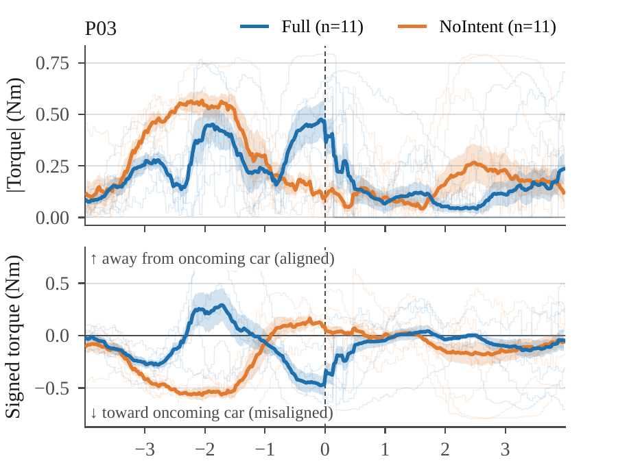
Ratings reveal individual preferences
Mean ratings were similar for the two assistants (6.05 vs 6.18 out of 10), with no significant difference on any of seven Likert dimensions. The averages hide a real split: five drivers rated each assistant higher, and each assistant had clear fans. The largest single-driver difference (2.75 points) is more than twenty times the change in the mean, which makes personalization a promising direction.
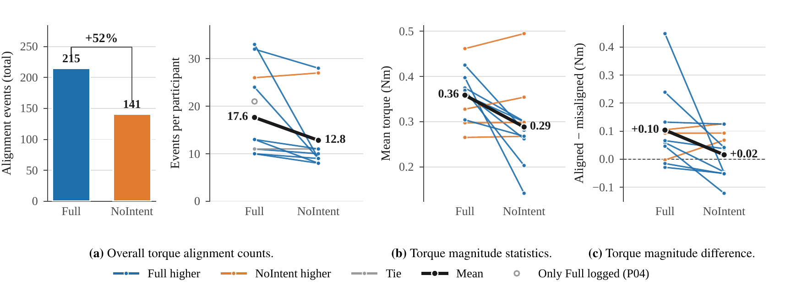
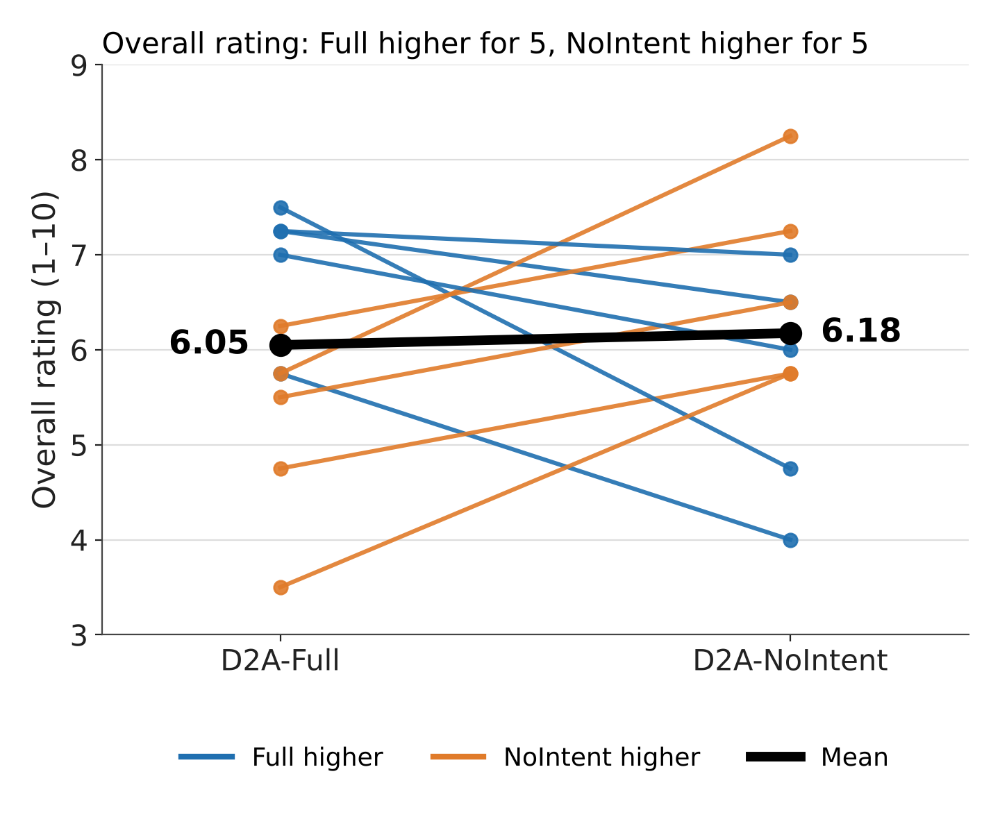
Open-ended feedback did separate the two policies, and the comments show the disagreement directly:
"[No intent] felt like a captain with too much pushback on the wheel, while [with intent] felt like a copilot helping me out rather than forcing decisions."
"[No intent] was better. After it corrected to where I was going, I liked it better than [with intent]. I had to fight with it less."
Directional consistency matters more to some drivers than firm correction does. This points toward assistants that adapt their intervention style to the individual.
GRIP · on-vehicle deployment
Does the policy carry over to a real vehicle without retraining?
We ran the urban scenario on GRIP, a real test vehicle on a track that emulates the simulator's vehicle dynamics, with the driving scene rendered in VR and force-feedback steering. The driver feels the car's actual motion. The same policy weights and intent space as Eval 3 were used, with minimal parameter changes for the steering hardware and no retraining. Three internal participants took part. In the oncoming-vehicle scenario the car held 13 to 14 mph while being steered around the hazard, and in the roundabout scenario it slowed from 9 to 4 mph. This is a feasibility demonstration, not a formal evaluation. The full deployment is shown in Video 3.
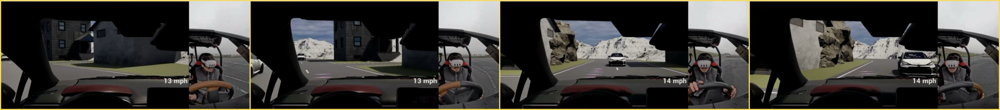
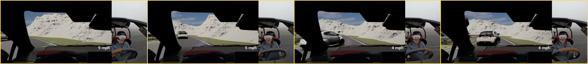
Supplementary videos
Montages of representative trials from each study.
Takeaways and open questions
Takeaways
- Inferring intent makes the assistant a better teammate, measurably. Against an otherwise identical assistant, intent conditioning produced 52% more steering aligned with the driver's chosen side and cut collisions from 7.7% to 2.7% of trials.
- Assistance is light by default. It stays small when the driver already drives like an intent-aligned expert, grows as the driver departs from that expert, and ramps down when the system is less certain of the driver's intent. This follows from the reward, not from a hand-coded rule.
- A learned policy can reach real drivers through a structured pipeline. Automated screening, counterfactual log replay, and human-in-the-loop testing, paired with interface design, took the policy from simulated partners to human studies and onto a real vehicle with no retraining.
- Real partners expose gaps that simulated ones hide. Racing turns revealed that simulated drivers were more repeatable than people. Human-data augmentation, smoothing, and reward restructuring moved the policy in the right direction.
- Average ratings hide strong individual preferences. Drivers split evenly on which assistant they preferred, even though the intent-conditioned one was objectively better aligned.
Open questions
- Changing intent. Intent is assumed fixed within an episode. How should the assistant track a driver who changes their mind mid-maneuver?
- Personalization. Can the assistant adapt its intervention style to each driver's preferred level of autonomy?
- Risk compensation. How much of the remaining assisted collisions comes from drivers taking more risk when assisted, and how much from residual policy error?
- Scale and realism. Do the results hold in a larger, powered on-vehicle study? The urban studies are small, and the GRIP result is a feasibility demonstration.
Citation
If you use this work, please cite the extended version:
@misc{decastro2026dream2assist,
title = {Dream to Assist: Intent-Conditioned World Models for Shared Vehicle Control},
author = {DeCastro, Jonathan and Balch, Thomas and Sumner, Emily and Gopinath, Deepak and Dees, Laporsha and Reyes Gomez, Patricio and Weiss, Elliot and Applegate-Kenton, Megan and Rowell, Todd and Leonard, John and Balachandran, Avinash and Rosman, Guy},
year = {2026},
eprint = {2610.34650},
archivePrefix = {arXiv},
url = {https://arxiv.org/abs/2610.34650},
note = {Extended version of the CoRL 2024 paper}
}
The initial version appeared at CoRL:
@inproceedings{decastro2024dream2assist,
title = {Dreaming to Assist: Learning to Align with Human Objectives for Shared Control in High-Speed Racing},
author = {Jonathan DeCastro and Andrew Silva and Deepak Gopinath and Emily Sumner and Thomas M. Balch and Laporsha Dees and Guy Rosman},
booktitle = {8th Conference on Robot Learning (CoRL) 2024. Munich, Germany},
year = {2024}
}
Ethics
The human-subjects studies were conducted under the oversight of WCG IRB on behalf of Toyota Research Institute. Informed consent was obtained from all participants.